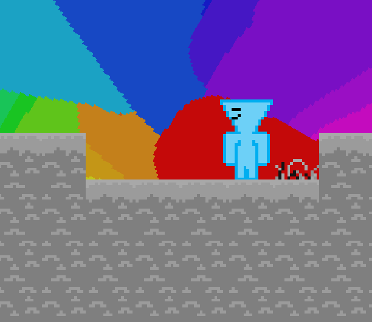
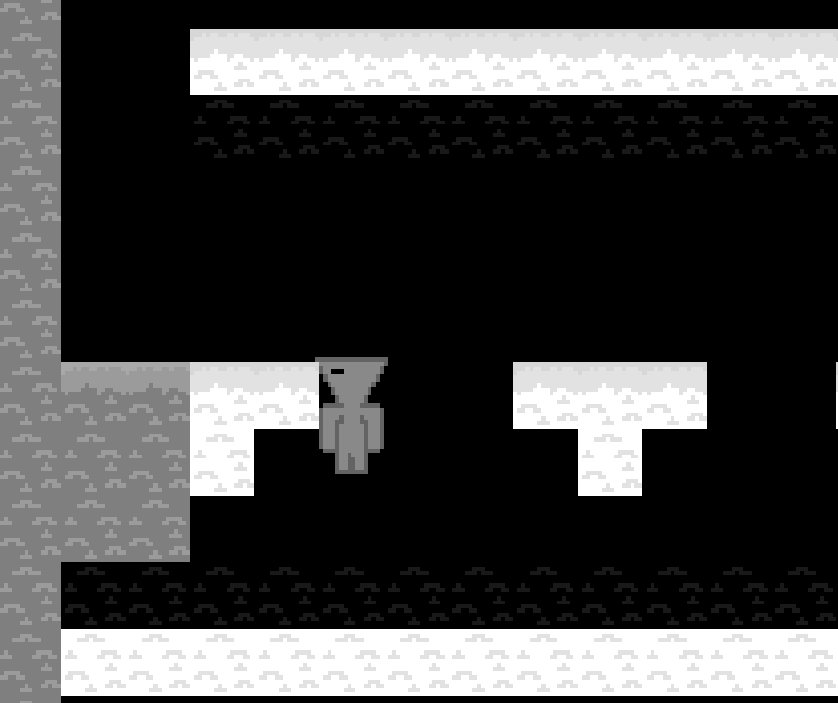
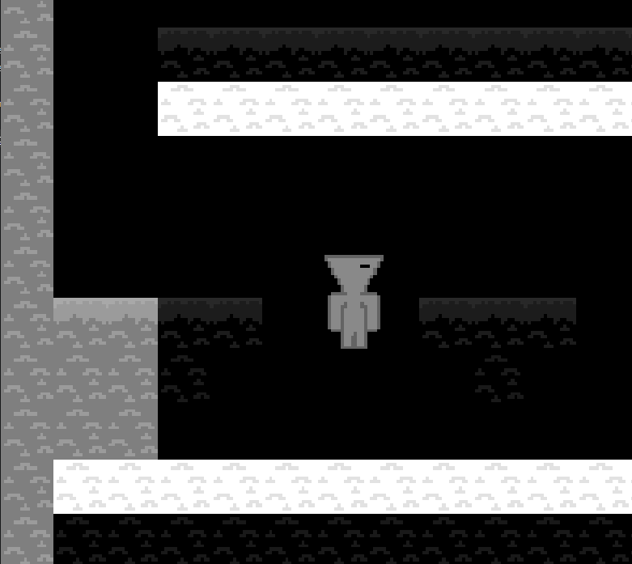
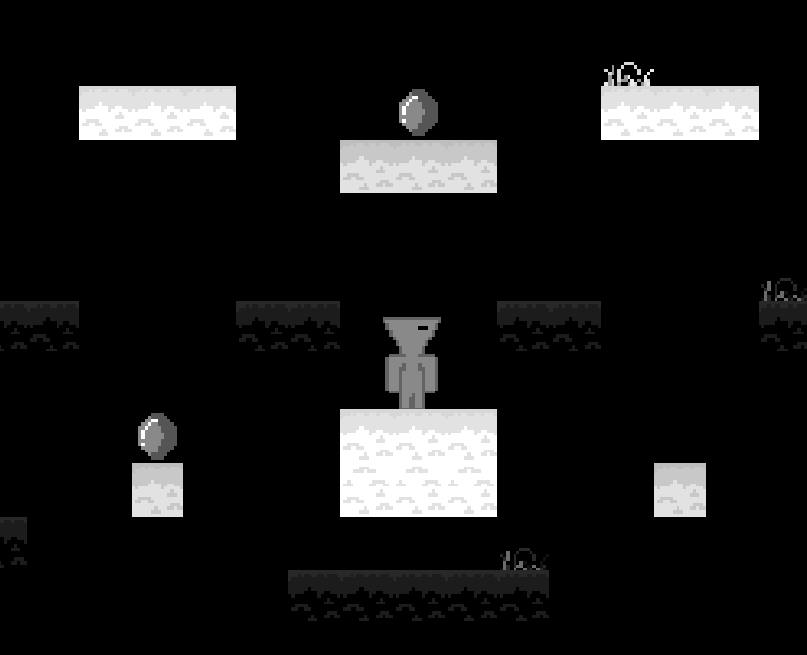

Void is a game I made back in 2024. It was one of my first ever true game-jams and honestly the one I am the proudest of. I built the entire game from scratch through the Gamemaker engine and I created something really fun! Void is a platformer puzzle game where you have the ability to walk in a limbo-like area of monotone colors, however the darkness can kill you so you have the ability to switch the colors back and forth allowing for safe travel! Eventually at the end of the game you find a gem with the first spark of color in it, and collecting it changes the world into something more beautiful!

Unique Features

One of the main features I added to make the platformer aspect more interesting was using a unique character model with it's own collision. I made him this way so that there could be a way to catch yourself on the edge of the blocks using your head!
The other big design I added was the ability to switch the colors of the world. By left-clicking, white and black swap, meaning the safe area is now dangerous and vice-versa. This allows for interesting puzzles and timing events where you have to swap the ground!


Throughout the game there are also a few gems to collect hidden throughout the map in harder to-reach areas! These gems if they are all collected will allow the player to unlock some secrets!